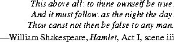

java.lang.BooleanBoolean represent primitive values of type boolean.
public final classBoolean{ public static final BooleanTRUE= new Boolean(true); public static final BooleanFALSE= new Boolean(false); publicBoolean(boolean value); publicBoolean(String s); public StringtoString(); public booleanequals(Object obj); public inthashCode(); public booleanbooleanValue(); public static BooleanvalueOf(String s); public static booleangetBoolean(String name); }
20.4.1 public static final Boolean
TRUE = new Boolean(true);
The constant value of this field is a Boolean object corresponding to the primitive
value true.
20.4.2 public static final Boolean
FALSE = new Boolean(false);
The constant value of this field is a Boolean object corresponding to the primitive
value false.
20.4.3 public
Boolean(boolean value)
This constructor initializes a newly created Boolean object so that it represents
the primitive value that is the argument.
20.4.4 public
Boolean(String s)
This constructor initializes a newly created Boolean object so that it represents
true if and only if the argument is not null and is equal, ignoring case, to the
string "true".
newBoolean("True")produces aBooleanobject that representstrue.newBoolean("yes")produces aBooleanobject that representsfalse.
20.4.5 public String
toString()
If this Boolean object represents true, a string equal to "true" is returned. If
this Boolean object represents false, a string equal to "false" is returned.
Overrides the toString method of Object (§20.1.2).
20.4.6 public boolean
equals(Object obj)
The result is true if and only if the argument is not null and is a Boolean object
that represents the same boolean value as this Boolean object.
Overrides the equals method of Object (§20.1.3).
20.4.7 public int
hashCode()
If this Boolean object represents true, the integer 1231 is returned. If this
Boolean object represents false, the integer 1237 is returned.
Overrides the hashCode method of Object (§20.1.4).
20.4.8 public boolean
booleanValue()
The primitive boolean value represented by this Boolean object is returned.
20.4.9 public static boolean
valueOf(String s)
The result is true if and only if the argument is not null and is equal, ignoring
case, to the string "true".
Example: Boolean.valueOf("True") returns true.
Example: Boolean.valueOf("yes") returns false.
20.4.10 public static boolean
getBoolean(String name)
The result is true if and only if the value of the system property (§20.18.9) named
by the argument is equal, ignoring case, to the string "true".
Contents | Prev | Next | Index
Java Language Specification (HTML generated by Suzette Pelouch on February 24, 1998)
Copyright © 1996 Sun Microsystems, Inc.
All rights reserved
Please send any comments or corrections to doug.kramer@sun.com